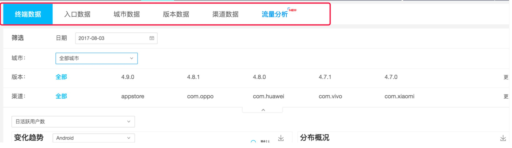

数据的收集与分析维度

数据改变我们认知：据某知名亲子鉴定机构统计，在当今中国25%的孩子不是亲生的!

数据便于我们决策：

1、数据的收集(数据埋点)

饿了么数据统计需求

饿了么” 需要统计用户行为、商家行为; 订单数据、活动营销数据等，而这些数据均需要通过 数据埋点 的方式才能获取到。

数据埋点的定义
数据埋点实际上就是产品或运营人员，基于统计分析需要，对 用户行为的每一个事件进行埋点布置，埋点通过技术在规定位 置安插代码进行监听，当需要关注的事件发生时进行判断和捕 获，然后获取必要的上下文信息，最后将信息整理后发送至服 务器端。此外，埋点也可以通过第三方监测分析工具提供的 SDK来进行编程实现。可简单理解为:技术安插了一段代码，从而监控了用户行为。

数据埋点的方式
1. 手动埋点
即公司开发人员在产品中注入代码统计，并搭建起相应的后台查询。
比较麻烦，需要自己定义清楚需统计的数据，需要尽量全面，同时 需要给技术定义编号、埋点含义和埋点类型。
2. 自动埋点
通过第三方统计工具，如友盟、百度移动、魔方、App Annie、 诸葛IO、talking data等。
利用百度统计、CNZZ、GrowingIO、诸葛IO等第三方统计平台， 只需要技术输入一行代码进去，就可以在他们提供的开放后台看到 所有的数据。
给技术提埋点需求案例

数据埋点的意义
帮助分析人员定义和获取真正需要的业务数据及其附带信息。 典型的应用场景有面向营销领域的分析，注重来源渠道和广告效果;有面向产品运营领域的分析，更在意产品本身流程 和体验的优化。两者各有侧重，也可以有一些交叉。
2、数据的呈现(数据平台)
数据平台的一般结构

按照模块划分数据平台主题


根据使用场景及业务设定筛选条件

根据指标进行可视化呈现
提供指标解释及口径
可自定义展示及导出
3、数据分析及工具详解

数据分析的定义
数据分析是指通过分析手段、方法和技巧对准备好的数据进行 探索、分析，从中发现因果关系、内部联系和业务规律，产品经理使用数据分析更多的是为产品改进提供决策参考
数据分析的范围
数据分析是产品经理必要的能力，很多数据与运营相关，大型 互联网公司也有专门的大数据中心。从产品经理的角度，数据分析 主要分三部分。
流量分析 ; 内容分析(订单分析);转化分析
流量分析：流量分析( IP、PV、在线时间、跳出率、新用户比例) 可以清晰的分析出产品的主要流量来源，从而指导产品推广的侧重点。


内容/订单分析
内容分析
内容分析可以帮助产品人员快速发现产品设计中的问题，作为产品迭代的依据。 比如页面布局是否合理?产品的逻辑和结构是否清晰?哪个功能需要调整?导 航是否清晰?
订单分析
以电商为代表的互联网公司，其内容分析更侧重于订单相关的数据分析，如: 总订单、有效订单、订单有效率、总销售额、客单价、毛利润、毛利率等。

转化分析
转化率分析(用户转化率、下单转化率、付款转化率等) 转化率分析大体可分为三步:关键路径、建漏斗以及定事件。
漏斗图适用于业务流程比较规范、周期长、环节多的流程分析，通过漏斗各环 节业务数据的比较，能够直观地发现和说明问题所在，转化分析大多数通过漏 斗图来实现。
“飞猪”数据分析例子-飞猪(阿里旅行)
“飞猪” ，继天猫、蚂蚁、闲鱼、菜鸟、神马等动物之后，阿里动物园又添新成员。
飞猪用户数目前>2亿，App下载>1亿，日均访问用户数达1000万。

案例一:首页转化率低
问题:产品第一版本上线后，发现首页向下转化率极低，才25%。需要紧急提高首页的转化率。
思考过程:
先查询首页每一个入口的向下转化率。发现数据集中在首页的“搜索”模块， 而其他模块，比如“热销低价商品推荐”，点击率都极低。基于对我们产品业 务的了解来进行分析，我们产品属于旅游环节中的中下流。用户到我们的界面 上来时，基本已选好目的地了。那么他们主要就使用搜索来查询他们想要的目 的地，然后再筛选他们感兴趣的旅游商品。而“热销低价产品推荐”由于只命 中了单一目的地，且商品不一定是用户感兴趣的，它击中用户需求的几率较低， 所以点击率极低。
解决方案:
1)、在首页增加了本月热门目的地的入口，并且设计了一个成本极低“运营管理后台”，对目的地进行人工运营配置。
2)、优化了商品分类，方便用户选择目的地时同时选择商品类型，进行更精 准的搜索，同时让用户在首页了解到我们有哪些类型的商品。
3)、删除了“热销低价商品推荐”模块，增加了“猜你喜欢”作为尝试。

效果评估:
最终首页向下转化率提高至68%。
措施1提高了约25%的转化率(每两周查询一遍 所有目的地的点击数据，把点击率低的目的地更 换为近期较热门的目的，反复替换，最终达到较 高的点击率为止。);
措施2提高了约10%的转化率;
措施3提高了约8%的转化率。

案例二:入口使用率不高
问题:发现一个功能的入口点击率很高(90%)，但使用率不高(60%)。
思考过程:查询与之相关的数据，从入口进来的用户流量都分布在什么位 置，然后发现用户进来后都集中在新手引导上，反复的左右翻看新手引导 (滑动操作的数据是UV的4倍)，且停留时长能有20多秒，发现用户的注 意力都集中到了新手引导上面。
解决方案:在新手引导的最后一页，增加一个“使用功能”的按钮。
效果评估:此功能的使用率从60%提高到了80%。

案例三:流量导入的例子
问题:攻略部门愿意导流量的合作
思考过程:攻略每天有10万多UV，若能给我们的商品导流量，一定会促进 我们商品的销售。我们平台(Web端)每天才6000的UV，若能有10万级 的流量入口，对我们商品销售的帮助一定是极大的。然后考虑到数据越是 在下游，就越精准，转化率也就越高。
解决方案:在搜索结果页、攻略详情页，增加相应目的地的我们商品的入 口。推荐每个目的地销量最好的商品。保证用户在攻略的界面看到的会是 他们需要的商品。
效果评估:上线一周后评估，一周仅成一个订单，远远没有达到预期的一 天至少5个订单。后来经过与攻略产品经理的沟通，分析，发现主要原因是 攻略的用户主要是出行前15天至两个月的用户，属于旅行前期的规划阶段， 看攻略是为了选择去哪里玩，而去哪儿玩都没有确定，怎么会在此时就购 买旅游商品呢?而我们的用户普遍集中在出行前的三天至七天，是用户确 定了目的地、机票酒店都已经订好了。才会在我们这里提前3~7天预订出境 WiFi、包车、导游翻译...
数据分析是需要不断实践总结，成功都是靠失败的经验教训堆积而成的。
以飞猪为例数据分析的总结
如上图所示，飞猪的页面流程可以简单分为这样的结构，取每一个界面的英文首字母简称。接下来进行分析:
1、一般重心以提高D界面的UV为主，如果D到O的转化率较低，那么问题是出在D界面， 可能是商品不好，或描述不好;
2、一般从O界面到付款的转化率都比较高，所以就不再展开说明了。一般这里的转化率 都会在65%以上，若是低于65%，那么就有必要进行优化;
3、“D的总UV” = “L到D的UV” + “G到D的UV”;
4、“L的转化率” =“L到D的UV” 除以 “L的总UV” 还可以进一步跟踪，L这部分的流 量到O界面的转化率如何;
5、“G的转化率” =“G到D的UV” 除以 “G的总UV” 还可以进一步跟踪，G这部分的 流量到O界面的转化率如何;
6、“H到L的转化率” = “L的总UV” 除以 “H的总UV”; 7、“H到S的转化率” = “S的总UV” 除以 “H的总UV”。
为了便于理解，整体的数据会呈现如以下的漏斗模型的结构:
A、以提高D的UV为重心，观察H、L、S、G界面中每一个界面的数据，每一个界面之间的转化率， 包括其最终的下单率。可以有针对性的进行迭代。
B、每一个界面的UV高低、每一个转化率的高低，都可以基于业务的进行分析。用户为什么在这个界 面流失多?是没有找到他想要的东西吗?或者首屏的产品不够吸引人?首屏内容看不懂?
C、一般来说，减少层级关系，能减少中间损失，提高转化率。中间少了一个界面，就能让流量直接 到下一个界面。
D、首页的流量是最多的，而用户的需求是最不明确的。此时，应以最大限度的覆盖用户的功能为主， 以致最大化的命中用户的需求。
E、为了快速积累经验，可以经常观察同行业竞品的设计，想办法得到对方的数据。如果他们的产品 设计数据比较好，那么我可以借鉴，如何数据不好，那我们就引以为戒。
基于飞猪的数据分析心得:
基于对自己的“业务”的了解，对自己的“用户”的了解，来分析为什么数据会呈现 这个样子。可以大胆的猜测，然后再通过数据来验证自己的猜测是否正确。分析用户深层次的动机，这往往是最有用的，也是最难的。
通过以上这些分析，你一定会发现很多很多需求，但别着急做，把所有的需求整理起 来。有些需求可以整合起来，一次性解决多个问题。
对每一个需求能带来的数据提升进行有依据的预测，根据预测的数据分值从高到低， 安排优先级，优先做对产品影响最大的需求。

数据统计工具详解
数据统计工具
中小互联网公司的数据统计多数采用为第三方统计平台，如:
Web网站:百度统计 CNZZ 友盟 移动端统计:百度移动统计 GrowingIO 诸葛IO

百度移动统计
很多产品都有自己的数据统计后台
以百度推广后台数据分析为例:
百度推广前端:http://editor.baidu.com/
百度统计后台示例: https://tongji.baidu.com/web/welcome/login